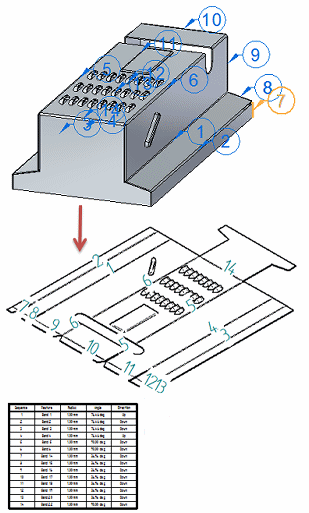

Save bend data with flat patterns
Bend data is required to manufacture a sheet metal part. Here are two ways you can provide this information:
-
Create a Solid Edge flat pattern drawing of the model with a bend table.

-
Save a flattened form of the sheet metal part in AutoCAD .dxf format with accompanying bend data.
Workflow to produce a flat pattern drawing with a bend table
Use this workflow to create a flat pattern sheet metal drawing with accompanying bend table.
-
Create the sheet metal part with bends in a sheet metal document.
-
Generate a flat pattern from the designed sheet metal part using the Flat Pattern command.
To learn how, see Construct a flat pattern in the sheet metal document.
-
Create a flat pattern drawing of the model using either of these commands:
-
In the sheet metal document, use the File menu→New→Drawing of Active Model command.
-
In the draft document, use the Home tab→Drawing Views group→View Wizard command.
With either command, you must choose the Flat Pattern option on the Drawing View Options tab of the Drawing View Creation Wizard.
To learn more, see Creating flat pattern drawings.
-
-
In the draft document, place a bend table and add bend callouts automatically using the Bend Table command (Draft).
To learn how, see Place a bend table on a drawing sheet.
Workflow to produce a .dxf file with bend data
Use this workflow to create a machine-ready sheet metal .dxf file with accompanying bend table.
-
Create the sheet metal part with bends in a sheet metal document.
-
Use the Bend Table command (Sheet Metal) to open the bend table for the part. While the bend table is open, copy the bend table data into a spreadsheet or other document.
You can change the bend sequence and add or rearrange columns in the bend table before you copy it.
To learn more, see Bend tables.
-
Use the Save As Flat command to flatten and save the sheet metal part in AutoCAD .dxf format or as a Solid Edge .par or .psm file.
To learn more, see Flattening sheet metal parts.
How do I
Place a bend table on a drawing sheetCreate a bend table for the part
Learn more
Bend tablesLook up more details
Bend Table command (Draft)Bend Table command (Sheet Metal)
Bend Table dialog box
Bend Table command bar (Draft)
Bend Table Properties dialog box
Bend Callouts page (Bend Table Properties dialog box)
Update Bend Table command